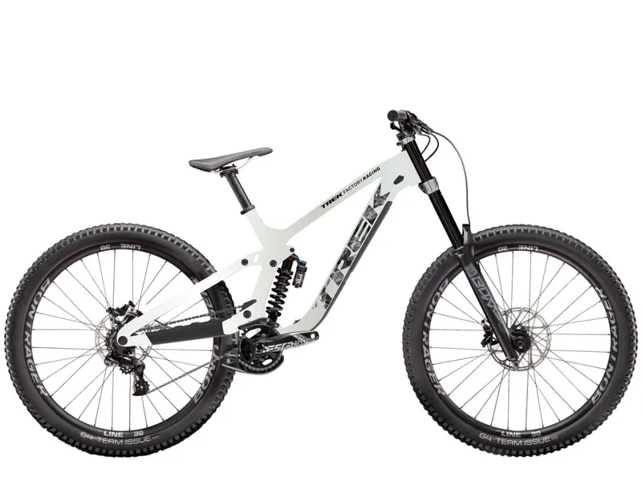

Trek Bicycle Corporation es una de las marcas de bicicletas más reconocidas a nivel mundial. Fundada en 1976 en Estados Unidos, Trek se ha convertido en sinónimo de calidad, innovación y alto rendimiento.
Trek Session 9 X01

Precio: $6.499.99
La Trek Session 9 X01 es una bicicleta de descenso diseñada para competir al más alto nivel. Con un cuadro de aluminio reforzado y una geometría agresiva, esta bicicleta está lista para enfrentar los terrenos más exigentes.